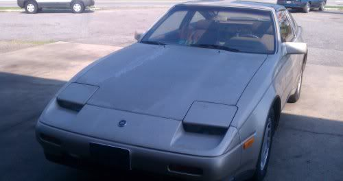

-
Thanks Dave, now understood all :superDave@SBC wrote: The 2006-up 350z HR and the 370z have a 240mm pressure plate, it's made by LUK and has a self-adjusting mechanism. It has 1830lbs of clamping force. The 350z DE pressure plate had two options, in 2003-2004 it was the standard Exedy 250mm pressure plate with 1790lbs of clamping force. In 2005 they made a change to a 250mm LUK self adjusting pressure plate. I pulled one of these from my car, but forgot to check for clamp load before throwing it in the trash.
All clutches require resurfacing for the break-in of the material. It may take longer or never hold the torque needed if you don't. The reason they say it doesn't is because of the self adjusting mechanism. -
Soo I am wondering can I use a 240mm clutch disk on my 250mm flywheel?
I have a spec stage 2 clutch and pressure plate from an na z32 and I drive an 87 turbo. I kniw the pp will not fit but would the smaller disk hurt anything? I would also be reusing my stock pressure plate.87 300zx turbo ~600whp
Built motor, ported heads, stage 2 cams, oversized valves, gutted maxima plenum, etc, etc, etc..... -
So if i order a 350z clutch kit , I must look for a 240mm one? , I can use the 350 throw out bearing and pp?, Or a Z32 n/a kit? , The reason i ask is locally there is no where i can find and z31 clutch of any sort -
I got my clutch from HorsePowerFreaks.com
They handle their business pretty seriously and have some pretty cool stuff, including a huge variety of Z31, Z32, Z33 clutches
Edit: quick question guys, in theory if I bought a Z32 flywheel and Z32 clutch kit they should swap right out correct?Kira-1988 N/A T-Top- Turbo soon
Naomi-1984 N/A Slicktop R.I.P.-stolen
1976 Chevy Camaro R.I.P.- Custom candycane rods -
Z32 flywheel will not work, it's the third post in this topic. Z32's have an 8 bolt fly where we have 6NizmoZ31 wrote: I got my clutch from HorsePowerFreaks.com
They handle their business pretty seriously and have some pretty cool stuff, including a huge variety of Z31, Z32, Z33 clutches
Edit: quick question guys, in theory if I bought a Z32 flywheel and Z32 clutch kit they should swap right out correct?87 300zx turbo ~600whp
Built motor, ported heads, stage 2 cams, oversized valves, gutted maxima plenum, etc, etc, etc..... -
Sorry, go me for not paying attention lol.Kira-1988 N/A T-Top- Turbo soon
Naomi-1984 N/A Slicktop R.I.P.-stolen
1976 Chevy Camaro R.I.P.- Custom candycane rods -
Is 300ZX NA flywheel same as pathfinder VG30 fly?1987 300ZX Turbo 2+2 - hard work and lot of fun.
Sorry for my "tarzan" english. -
no, check P/N, pathy's fly is same to EUDM turbo (ALL) and USDM late turbo, e.g. 250 mm.TooSlow wrote: Is 300ZX NA flywheel same as pathfinder VG30 fly?
p/n-s 12310-02P24,12310-02P21,12310-02P22 (replace code 12310-02P19), -
Yeah, you can do that. You're decreasing size which decreases torque holding, but if you're in a pinch, it will work.vgVQ wrote: Soo I am wondering can I use a 240mm clutch disk on my 250mm flywheel?
I have a spec stage 2 clutch and pressure plate from an na z32 and I drive an 87 turbo. I kniw the pp will not fit but would the smaller disk hurt anything? I would also be reusing my stock pressure plate.Dave
Z31P sponsor
800-988-4345 ext: 114
http://www.DXDRacingclutches.com
90 Z32 Base 5spd, 05 Z33 Touring 6spd.
SOLD- 84 Z31 NA2T GLL 5spd
-
The Z33 stuff is designed for a flat flywheel and the Z31 flywheels have a .008 step. You should resurface your flywheel flat before installing a Z33 clutch kit otherwise the pressure plate will be over compressed. That decreases clamping force and could make the diaphragm fingers come in contact with the disc.Fredster102 wrote: So if i order a 350z clutch kit , I must look for a 240mm one? , I can use the 350 throw out bearing and pp?, Or a Z32 n/a kit? , The reason i ask is locally there is no where i can find and z31 clutch of any sort
I would use the Z31 release bearing, it seems to work the best. The Z32 kits wouldn't give much more benefit then a z31 turbo kit. They have the same clamping force and you have to (SHOULD) buy a different (Z31) release bearing.Dave
Z31P sponsor
800-988-4345 ext: 114
http://www.DXDRacingclutches.com
90 Z32 Base 5spd, 05 Z33 Touring 6spd.
SOLD- 84 Z31 NA2T GLL 5spd
-
If I remember right, there is a difference. I can't remember if it's basically a Z31 flywheel with 8 bolt center or a Z31 flywheel with a Z32 ring gear.TooSlow wrote: Is 300ZX NA flywheel same as pathfinder VG30 fly?Dave
Z31P sponsor
800-988-4345 ext: 114
http://www.DXDRacingclutches.com
90 Z32 Base 5spd, 05 Z33 Touring 6spd.
SOLD- 84 Z31 NA2T GLL 5spd
-
[quote]Dave@SBC wrote:Pathfinders are a VG30E, therefor its 6 bolt just like the Z31. I have a pathfinder engine in my Z31 with a Z31 flywheel…Originally posted by TooSlow
As far as the ring gear…its Z31. They're the same flywheel as 87-89 turbos. Why? Because They have 30As, like 87-89 Turbos.
Pathfinder VG30 Flywheel interchange:
NISSAN 300ZX TURBO (1987 - 1989)
NISSAN D21 PICKUP V6 (1988 - 1994)
NISSAN FRONTIER V6 (1999 - 2004)
NISSAN PATHFINDER (1987 - 2000)
NISSAN PICKUP V6 (1995 - 1996)
NISSAN XTERRA V6 (2000 - 2004)- VG30DET (HE341) 86 300ZX - 1982 280ZX Turbo - Headered NA 1986 300ZX 2+2 - 2000 Xterra - -
[quote]michaelp wrote: [quote=Dave@SBC]EHMM, Early EUDM Z31T also have 250mm fly, but they had BorgWarner=)Originally posted by TooSlow -
[quote]michaelp wrote: [quote=Dave@SBC]You know what, you're right. I was basing my info on Jon Martin's car and I forgot he stuffed a Z32 crank in his VG33. That's why I had thought there was something different. My bad.Originally posted by TooSlowDave
Z31P sponsor
800-988-4345 ext: 114
http://www.DXDRacingclutches.com
90 Z32 Base 5spd, 05 Z33 Touring 6spd.
SOLD- 84 Z31 NA2T GLL 5spd
-
So just to confirm, I could use this 350z oem replacement clutch kit - http://www.amazon.com/EXEDY-NSK1000-OEM … B001B5E0SG - with my 88 N/A (which uses the 240mm flywheel) I just need to have the flywheel machined flat and get a throwout bearing and pilot bushing for a Z31?
88 300ZX NA GLL 5-speed - Work in progress

Copyright © 2006–. All rights reserved. Privacy Policy